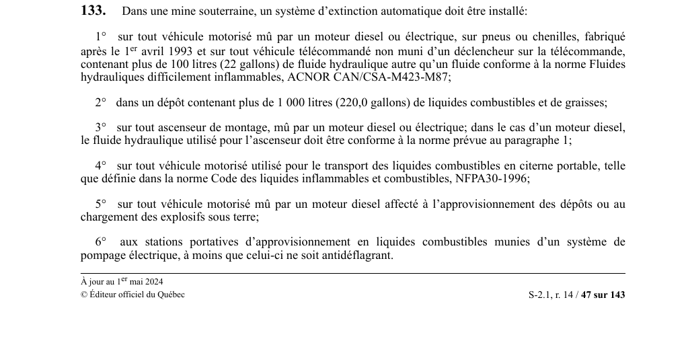

art-133-RSSM : extinction automatique véhicules dépôts souterrains
Sous terre, six situations à risque d'incendie imposent un système d'extinction automatique : gros volumes de fluide hydraulique, dépôts de liquides combustibles, ascenseurs de montage, transport de carburant et manutention d'explosifs.
- Véhicules : engins diesel ou électriques, sur pneus ou chenilles, fabriqués après le 1er avril 1993, et véhicules télécommandés sans déclencheur sur la télécommande, dès qu'ils contiennent plus de 100 litres (22 gallons) de fluide hydraulique non conforme à la norme ACNOR CAN/CSA-M423-M87.
- Dépôts : tout dépôt contenant plus de 1 000 litres (220,0 gallons) de liquides combustibles et de graisses.
- Ascenseurs de montage mus par un moteur diesel ou électrique ; en version diesel, le fluide hydraulique doit respecter la même norme qu'au paragraphe 1.
- Transport de carburant : véhicule motorisé servant au transport de liquides combustibles en citerne portable au sens de la norme NFPA 30-1996.
- Explosifs et ravitaillement : véhicule diesel affecté à l'approvisionnement des dépôts ou au chargement des explosifs sous terre, ainsi que les stations portatives d'approvisionnement en liquides combustibles à pompage électrique, sauf si la pompe est antidéflagrante.
🌐 LegisQuébec · 📄 PDF officiel
Texte officiel
Dans une mine souterraine, un système d’extinction automatique doit être installé:
1° sur tout véhicule motorisé mû par un moteur diesel ou électrique, sur pneus ou chenilles, fabriqué après le 1 avril 1993 et sur tout véhicule télécommandé non muni d’un déclencheur sur la télécommande, contenant plus de 100 litres (22 gallons) de fluide hydraulique autre qu’un fluide conforme à la norme Fluides hydrauliques difficilement inflammables, ACNOR CAN/CSA-M423-M87;
2° dans un dépôt contenant plus de 1 000 litres (220,0 gallons) de liquides combustibles et de graisses;
3° sur tout ascenseur de montage, mû par un moteur diesel ou électrique; dans le cas d’un moteur diesel, le fluide hydraulique utilisé pour l’ascenseur doit être conforme à la norme prévue au paragraphe 1;
4° sur tout véhicule motorisé utilisé pour le transport des liquides combustibles en citerne portable, telle que définie dans la norme Code des liquides inflammables et combustibles, NFPA30-1996;
5° sur tout véhicule motorisé mû par un moteur diesel affecté à l’approvisionnement des dépôts ou au chargement des explosifs sous terre;
6° aux stations portatives d’approvisionnement en liquides combustibles munies d’un système de pompage électrique, à moins que celui-ci ne soit antidéflagrant.
Pour l’application du présent article, on entend par «système d’extinction automatique», un système qui se déclenche par lui-même sous l’action de la chaleur.
Texte de l’article 133 RSSM, extrait de la couche texte du PDF officiel (page 47), sans OCR ni retouche. La capture ci-dessous et le PDF font foi.
{kind=link}

Toucher l'image pour l'agrandir🔗 Voir art. 133 RSSM dans le PDF (page 47)
Version : texte officiel du RSSM (RLRQ c. S-2.1, r. 14), à jour au 1er mai 2024 — Éditeur officiel du Québec
⚠️ Capture partielle : l'image s'arrête au bas de la page 47 du PDF. Consulter la page 48 pour la fin de l'article.
Voir aussi
- art. 131 : choix extincteur selon type feu · le choix de l'extincteur portatif à utiliser en cas de feu se fait en fonction des types de feux établis à l'annexe I du règlement.
- art. 132 : extincteur classe C local électrique · interdiction : un extincteur portatif non conçu pour combattre un feu de classe C ne doit pas être placé dans un local qui renferme de l'appareillage électrique.
- art. 134 : extinction semi-automatique véhicules dépôts souterrains · obligation : dans une mine souterraine, un système d'extinction semi-automatique (à déclenchement manuel) doit être installé sur les véhicules visés à l'article 133 mais fabriqués avant le 1er avril 1993 (au plus tard un an après le 1er avril 1993).
- art. 135 : déclenchement manuel accessible systèmes extinction · obligation : les systèmes d'extinction prévus aux articles 133 et 134 doivent être conçus et installés de façon à pouvoir être déclenchés manuellement à un endroit facilement accessible.
- ⚖️ Loi habilitante : LSST
- ↑ Index du bloc : Soutènement
Pages qui pointent ici (5)
- art-131-RSSM : choix extincteur selon type feu Recueil législatif
- art-132-RSSM : extincteur classe C local électrique Recueil législatif
- art-134-RSSM : extinction semi-automatique véhicules dépôts souterrains Recueil législatif
- art-135-RSSM : déclenchement manuel accessible systèmes extinction Recueil législatif
- RSSM : Soutènement (art. 131 à 160) Recueil législatif